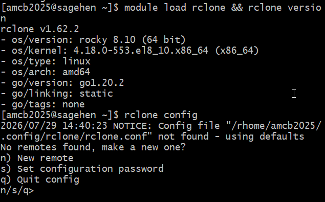
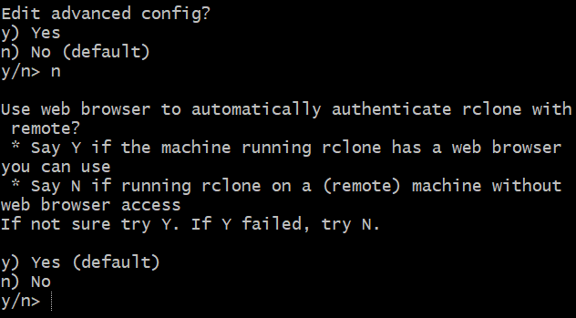

All in One View
Content from Why Cloud Storage Integration Matters
Last updated on 2026-08-24 | Edit this page
Overview
Questions
- Why would I want to connect cloud storage to an HPC system?
- What are the benefits of using rclone?
- What cloud storage options are available at Pomona College?
Objectives
- Understand common use cases for cloud storage integration
- Learn about Box and OneDrive availability at Pomona College
- Recognize security considerations for cloud storage
Cloud storage and Pomona’s data classification
Pomona uses a 3-tier data classification (PUBLIC / PROPRIETARY / RESTRICTED). Cloud-storage rules differ by tier:
-
PUBLIC data: may be shared via Pomona Box or
OneDrive (
pomona-box:andpomona-onedrive:rclone remotes), or via institutionally approved public archives (Zenodo, OSF, GitHub). - PROPRIETARY data: institutional storage (Pomona Box / OneDrive / Sagehen) only. No personal cloud accounts.
- RESTRICTED data (FERPA, HIPAA, ITAR/EAR, CUI): MUST be encrypted with gocryptfs (AES-256-GCM) BEFORE upload. Personal cloud accounts (personal Google Drive, Dropbox, etc.) are PROHIBITED. See Workshop 14 (Data Classification) and Workshop 15 (gocryptfs) for the operational details.
When in doubt, classify as RESTRICTED and consult the Registrar (FERPA), HIPAA Privacy Officer, ORSP (export-controlled), or its-hpc@pomona.edu (technical implementation).
The Challenge: Data Movement in Research
Working on a high-performance computing (HPC) system like Sagehen at Pomona College is powerful, but it introduces a common challenge: how do you move large amounts of data between the HPC cluster and your personal or collaborative storage?
Consider these scenarios:
Scenario 1: Sharing Results with Collaborators
You’ve just completed a 3-day simulation on Sagehen that produced 50 GB of results. Your collaborators at another institution need access to these files. How do you get them there efficiently?
Scenario 2: Backing Up Large Datasets
You’re processing a 100 GB dataset on the HPC system. You want to maintain a backup copy in institutional cloud storage (Box) in case anything goes wrong.
What is rclone?
rclone is a command-line tool that acts as a Swiss Army knife for cloud storage. It allows you to:
- Sync files between your HPC system and cloud storage automatically
- Copy files without syncing (useful for backups)
- List, delete, and organize files in cloud storage remotely
- Monitor and verify file transfers
- Automate transfers within job scripts or scheduled tasks
- Work offline then sync when connected
rclone is like rsync or scp (tools you may
already know for HPC file transfer), but designed specifically for cloud
storage providers.
Cloud Storage at Pomona College
Storage Options Available to You at Pomona
At Pomona College, you have access to two primary cloud storage services:
Box (Institutional)
- Type: Institutional cloud storage
- Who uses it: All Pomona faculty, staff, and students
- Size: Generous institutional quota
- Best for: Collaboration with colleagues, sharing results, backing up work
- Access: Single Sign-On (SSO) with your Pomona NetID
- Cost: Free at Pomona
Box is ideal when: - You need to share files with other Pomona users - You want institutional-grade security and compliance - Your data falls under Pomona’s data governance policies
OneDrive (Personal)
- Type: Personal cloud storage (via Microsoft 365)
- Who uses it: Students with Office 365 access
- Options: OneDrive Personal (smaller quota) or OneDrive for Business (larger)
- Best for: Personal backups, temporary storage, syncing to personal devices
- Access: Your Pomona Microsoft account
- Cost: Free at Pomona
OneDrive is ideal when: - You want personal control over your storage - You need seamless integration with Microsoft Office tools - You prefer smaller, personal-scale workflows
Why Use rclone with HPC?
Problem 1: SSH Transfers are Slow for Large Datasets
Traditional: scp -r results/ your_laptop:~/Downloads/
# This is blocking, slow, and fails on network interruptionsProblem 2: Manual Syncing is Error-Prone
Manually copying files each time you want to backup or share is: - Tedious - Prone to forgetting files - Difficult to track which version is current
Problem 3: Cloud Storage GUIs Don’t Scale
Uploading a 50 GB folder through the Box web interface: - Times out - Is painfully slow - Doesn’t integrate with job scripts
Benefits of rclone
- Fast: Optimized for large file transfers
- Reliable: Handles network interruptions gracefully
- Scriptable: Integrates with job scripts and automation
- Flexible: Works with many cloud providers (Box, OneDrive, Google Drive, etc.)
- Efficient: Only transfers changed files when syncing
- Verifiable: Checksums and integrity checking
- Smart: Dry-run mode to preview changes before committing
Security Considerations
Protecting Your Data: Security Best Practices
Before integrating cloud storage with HPC, keep these security practices in mind:
Sensitive Data
- Do not store: Passwords, API keys, or authentication tokens directly in scripts
-
Do use: rclone’s encrypted configuration and
--password-commandfor sensitive parameters - Consider: Whether the data classification allows cloud storage (check with IT)
Authentication
- OAuth tokens expire: Every few months, you’ll need to refresh your connection
- Two-factor authentication: If enabled on your Pomona account, you’ll authenticate once during setup
- No passwords in config: rclone stores only OAuth tokens, not your actual Pomona password
Network Security
- SSH tunneling: You’ll establish a secure connection to authorize rclone
- HTTPS encryption: All transfers to/from Box and OneDrive are encrypted
- Institutional oversight: Box at Pomona is managed by IT and audited for compliance
Data Governance
- Know your data policy: Some research data must stay on institutional systems
- Check compliance requirements: FERPA, HIPAA, or grant-specific restrictions may apply
- Contact IT if unsure: its-hpc@pomona.edu can clarify what’s allowed
What rclone is NOT
- Not a backup tool (though you can use it for backups)
- Not a version control system (use Git for code)
- Not a file sync service like Dropbox (no automatic folder syncing)
- Not a replacement for institutional backup systems
Challenge 1.1: Identify Your Use Case
Think about your research or coursework. Write down: 1. What data do you generate or work with on Sagehen? 2. How much storage do you typically need? 3. Who needs access? (Just you? Collaborators? Instructors?) 4. When do you need backups? (Continuously? After milestones?) 5. Which cloud service would be better for you: Box (sharing with Pomona folks) or OneDrive (personal control)?
Example discussion points:
- Data: “I generate ~20 GB of simulation output per run, plus analysis scripts and figures.”
- Storage: “I typically need 50-100 GB for active projects, plus archival storage for completed work.”
- Access: “My advisor and two lab mates need access to results; I also share final figures with collaborators at other institutions.”
- Backups: “After each major simulation run (weekly) and before any conference deadline.”
- Cloud service: Box is better if you share with Pomona colleagues; OneDrive is better for personal backups and Office integration. Many researchers use both.
Challenge 1.2: Security Check
For the research data you identified above, consider: 1. Is this data sensitive? (Personal data? Medical data? Proprietary?) 2. What are the restrictions? (Check your project requirements or advisor) 3. Is cloud storage appropriate? (Ask yourself or your supervisor) 4. Who should have access? (Just you? Your research group? The world?)
If you’re unsure about data policies, it’s always okay to ask your advisor or email its-hpc@pomona.edu.
Example responses:
- Sensitive? Most coursework data is not sensitive, but research involving human subjects, medical records, or proprietary datasets may be. When in doubt, assume it is sensitive.
- Restrictions: Check your grant agreement, IRB protocol, or course syllabus. FERPA-protected student data and HIPAA-covered health data have strict rules.
- Cloud appropriate? Generally yes for de-identified research data and coursework. Not appropriate for data under export control or certain compliance frameworks without IT approval.
- Access: Follow the principle of least privilege – share only with people who need the data, and use Box’s built-in sharing controls to limit access.
When unsure, contact its-hpc@pomona.edu before uploading data to cloud storage.
- Cloud storage integration solves real HPC data transfer challenges (sharing, backup, off-campus access)
- rclone is a powerful command-line tool for syncing files between HPC and cloud storage
- Pomona provides two cloud options: Box (institutional) and OneDrive (personal)
- OAuth authentication provides secure token-based access without storing passwords
- Always consider data governance and security policies before moving data to cloud storage
Content from Installing and Configuring rclone
Last updated on 2026-08-24 | Edit this page
Overview
Questions
- How do I load rclone on Sagehen?
- What is SSH port forwarding and why do I need it?
- How does the rclone configuration process begin?
Objectives
- Connect to Sagehen with SSH port forwarding for OAuth
- Load the rclone module on the HPC cluster
- Understand the rclone configuration workflow
Prerequisites
Before starting, make sure you have:
- SSH access to Sagehen HPC system
- A Pomona College NetID and either a Box or OneDrive account
- A terminal application (Terminal on Mac/Linux, PowerShell or Git Bash on Windows)
- A web browser for OAuth authentication
- Approximately 15 minutes
Step 1: Connect to Sagehen with Port Forwarding
SSH Port Forwarding for Secure OAuth Authentication
The first step is to establish an SSH connection to Sagehen with port forwarding enabled. This creates a secure tunnel that rclone will use for OAuth authentication.
For Mac/Linux Users:
Open your terminal and run:
Replace username with your Pomona NetID (e.g., jsmith@sagehen.hpc.pomona.edu).
When prompted, enter your Pomona password.
Expected output:
Last login: Wed Mar 05 2026 13:45:02 -0700 from 192.168.1.100
[username@login-1 ~]$For Windows Users (PowerShell):
If SSH is not available, use PuTTY or Windows Subsystem for Linux (WSL).
VS Code Remote SSH Users:
If you typically use VS Code’s Remote-SSH extension, you can still use SSH with port forwarding by:
- Option A: Use a separate terminal window (recommended for rclone setup)
-
Option B: Modify your
.ssh/configto include the port forwarding:
Host sagehen
HostName sagehen.hpc.pomona.edu
User username
LocalForward 53682 localhost:53682Then connect with ssh sagehen.
You are now connected to Sagehen. The terminal prompt shows you’re on the HPC system.
Step 2: Load the rclone Module
Once connected to Sagehen, load the rclone module:
Expected output:
Loading rclone/1.65.2 ...Verify rclone is available:
Expected output:
rclone v1.65.2
- os/version: linux (Linux 6.8.0-94-generic #94-Ubuntu 22.04.1-generic)
- go version: go1.20.3The version number may differ depending on the module version, but you should see rclone is ready to use.
Step 3: Start rclone Configuration
Now you’ll begin configuring rclone:
Expected output (first run, no config yet — a short three-option menu):
NOTICE: Config file "/rhome/<myusername>/.config/rclone/rclone.conf" not found - using defaults
No remotes found, make a new one?
n) New remote
s) Set configuration password
q) Quit config
n/s/q>Once you have remotes configured, the same command shows the longer
e/n/d/r/c/s/u/m/v/b/q menu with your remotes listed at the
top.

module load rclone && rclone version (v1.62.2 on
Rocky 8.10), then rclone config with the fresh-config
menu.Type n to create a new remote. In the next episodes,
you’ll complete the configuration for Box or OneDrive.
Saving Your Configuration
Protecting Your rclone Configuration
rclone stores your configuration securely on Sagehen:
Location:
~/.config/rclone/rclone.conf
This file contains your OAuth token and configuration. It’s encrypted and should not be shared. Never commit this file to Git or upload it publicly.
Challenge 2.1: Connect and Load rclone
After connecting and loading the module, rclone version
should display something like:
rclone v1.65.2
- os/version: linux (Linux 6.8.0-94-generic #94-Ubuntu 22.04.1-generic)
- go version: go1.20.3The exact version number may vary. Seeing any version output (no
errors) confirms rclone is loaded and ready. If you get
rclone: command not found, you forgot to run
module load rclone.
- SSH port forwarding (-L 53682:localhost:53682) enables secure OAuth authentication between your browser and Sagehen
- The rclone module must be loaded with
module load rclonebefore use on Sagehen - rclone configuration is stored securely in ~/.config/rclone/rclone.conf and should never be shared
- The
rclone configcommand starts an interactive setup wizard for adding cloud storage remotes
Content from Setting Up Pomona Box
Last updated on 2026-08-24 | Edit this page
Overview
Questions
- How do I configure rclone for Pomona’s Box storage?
- How does OAuth authentication work with Box?
- How do I verify the Box connection?
Objectives
- Configure a new rclone remote for Box using OAuth
- Complete the Box OAuth authorization flow
- Verify the connection with rclone about and rclone lsd
Configuring rclone for Box
This episode assumes you are connected to Sagehen with port forwarding and have rclone loaded (see Episode 2). Start the configuration:
Type n to create a new remote.
Name Your Remote
rclone will ask for a name. This is what you’ll use in commands to reference your Box storage:
name> pomona-boxYou can use any name you like (e.g., my-box,
box-backup). We’ll use pomona-box in
examples.
Select the Storage Type
rclone will list available storage types. Type box or
the corresponding number:
Storage> boxOAuth Authentication (Browser)
Back on Terminal
Once you’ve granted access in the browser, rclone will automatically receive the token:
2026/03/05 14:22:05 NOTICE: Box (pomona-box) Waiting for local client...
2026/03/05 14:22:15 NOTICE: Box authorization successfulAnswer the Web-Browser Question
rclone then asks one more question the older docs didn’t show:
Use web browser to automatically authenticate rclone with remote?
* Say Y if the machine running rclone has a web browser you can use
* Say N if running rclone on a (remote) machine without web browser access
If not sure try Y. If Y failed, try N.
y) Yes (default)
n) No
y/n>Answer n on Sagehen — the cluster has
no web browser. rclone will then show instructions to run
rclone authorize "box" on your own laptop (which does have
a browser) and paste the resulting JSON blob back into the
config_token> prompt on Sagehen. Paste the
entire JSON output, braces included — a bare token string will
fail with a decode error.

n to the browser question because
Sagehen is a remote machine without one.Verify the Connection
Test that rclone can access your Box account:
Expected output:
Total: 1.0T
Used: 25.3G
Free: 974.7G
Trashed: 0B
Other: 0BAlso try listing your Box home directory:
Expected output:
-1 2026-02-15 10:30:00 -1 My Research
-1 2026-01-20 14:45:00 -1 SharedIf you see your Box files listed, setup is successful!
For VS Code Remote-SSH Users (Cleanup)
If you configured port forwarding in your .ssh/config
for VS Code, it may show port 53682 in its PORTS tab. After rclone setup
is complete, you can delete this port from the PORTS tab to reduce
clutter. Your rclone connection will still work.
You should see output similar to:
Total: 1.0T
Used: 25.3G
Free: 974.7G
Trashed: 0B
Other: 0BThe exact numbers depend on your Box usage. Seeing storage info (no
errors) confirms your pomona-box remote is configured
correctly. If you see ERROR: access_token_expired, revisit
the OAuth steps above.
Challenge 3.2: List Your Box Contents and Create a Test Folder
- Box uses Pomona’s Single Sign-On (SSO) for authentication, which may include two-factor authentication
- rclone configuration stores OAuth tokens securely in ~/.config/rclone/rclone.conf and does not store your password
- Test your configuration with rclone about and rclone lsd commands to verify the connection works
- The rclone remote name (e.g., pomona-box) is your local reference for this Box account and can be customized
Content from Setting Up OneDrive
Last updated on 2026-08-24 | Edit this page
Overview
Questions
- How do I set up rclone to use OneDrive with my Pomona account?
- What’s the difference between OneDrive Personal and OneDrive for Business?
- How do I select the correct drive when multiple options are available?
Objectives
- Configure rclone for OneDrive using OAuth
- Understand OneDrive Personal vs OneDrive for Business options
- Verify connectivity and list your drive contents
When to Choose OneDrive
Deciding Between Box and OneDrive
Use OneDrive with rclone if you:
- Want personal control over cloud storage
- Prefer seamless Office 365 integration
- Have smaller-scale data syncing needs
- Want storage that’s accessible from multiple devices
- Don’t need to share with other Pomona users (use Box for that)
| Aspect | Box | OneDrive |
|---|---|---|
| Intended use | Institutional/Shared | Personal/Individual |
| Best for | Collaboration at Pomona | Personal backups |
| Sharing | Easy with Pomona users | Better with personal contacts |
| Data governance | Pomona manages/audits | You manage |
| Setup complexity | Straightforward | Slightly more options |
This episode assumes you already have an SSH session open with port forwarding and rclone loaded. If not, see Episode 2.
Configure OneDrive
Start a new rclone configuration:
Type n to create a new remote, then name it:
name> pomona-onedriveMicrosoft OAuth Flow
rclone will open your browser to Microsoft’s login page:
- Sign in page: Enter your Pomona College email address
- Password page: Enter your Pomona password
- Two-Factor Authentication: If enabled, authenticate with your 2FA method
- Consent page: You’ll see “Rclone wants to access your resources”
- Grant access: Click “Accept” or “Yes”
- Confirmation: You’ll see “The app is now authorized. You can close this window.”
Back on terminal, you should see:
2026/03/05 14:35:22 NOTICE: Microsoft OneDrive authorization successfulChoose Your OneDrive Type
OneDrive Options: Personal vs Business
rclone will ask which OneDrive to use:
0 / OneDrive Personal
\ "onedrive"
1 / OneDrive for Business
\ "business"
2 / Document Library (from SharePoint)
\ "documentLibrary"
onedrive_type>-
Type
0(OneDrive Personal): Personal OneDrive (typically smaller quota) -
Type
1(OneDrive for Business): Business account with larger quota -
Type
2(Document Library): SharePoint site documents
For most Pomona students, choose 0 (OneDrive Personal).
Verify the Connection
Test that rclone can access your OneDrive:
Expected output:
Total: 1.0T
Used: 8.4G
Free: 991.6G
Trashed: 0B
Other: 0BList your OneDrive root directory:
Now You Have Two Remotes
If you set up both Box and OneDrive, verify both remotes are available:
You now have:
-
pomona-box:– Your institutional Box storage -
pomona-onedrive:– Your Pomona institutional OneDrive for Business storage (M365)
You can use rclone commands with either remote, and even transfer files between them!
OneDrive Storage Paths
When using OneDrive with rclone, remember these path conventions:
BASH
# Root of your OneDrive
rclone ls pomona-onedrive:/
# A specific folder
rclone ls pomona-onedrive:/Documents
# A nested folder
rclone ls pomona-onedrive:/Documents/ResearchYou should see output similar to:
Total: 1.0T
Used: 8.4G
Free: 991.6G
Trashed: 0B
Other: 0BSeeing storage information (no errors) confirms your
pomona-onedrive remote is configured correctly.
OneDrive typically has more default folders (Documents, Downloads, Pictures). Box may have fewer folders if it is new. Use Box for institutional collaboration and OneDrive for personal storage.
- Pomona’s institutional OneDrive for Business is the supported endpoint.
- The Microsoft OAuth flow requires signing in with your Pomona email and handling two-factor authentication
- You can configure multiple cloud remotes with rclone (Box and OneDrive) and reference them with their unique names
- Test your OneDrive configuration with rclone about and rclone lsd commands just like Box
Content from Copying Files
Last updated on 2026-08-24 | Edit this page
Overview
Questions
- How do I copy files from HPC to cloud storage?
- What does the
remote:pathsyntax mean? - How do I preview changes before copying?
Objectives
- Understand rclone’s
remote:pathsyntax - Copy files between local, Box, and OneDrive with
rclone copy - Use
--dry-runto preview operations before executing - Verify transfers with
rclone check
Understanding remote:path Syntax
The Foundation: remote:path Notation
The most important concept in rclone is the remote:path
syntax. When you use an rclone command, you reference cloud storage
using:
remote_name:path/to/fileremote_name is the name you gave during
configuration (pomona-box, pomona-onedrive,
etc.) path/to/file is the location within that
remote
Copying Files: rclone copy
The rclone copy command copies files from a
source to a destination, adding new files to the destination
without removing existing ones.
Local to Cloud Examples
Copy a file from your HPC home directory to Box:
Copy a local folder to Box:
Dry-Run: Preview Before Copying
Safe Testing: Always Use –dry-run First
Before running a copy, use --dry-run to preview what
will happen:
Expected output:
2026/03/05 15:10:22 INFO : file1.csv: Copied (dry run)
2026/03/05 15:10:22 INFO : subfolder/file2.txt: Copied (dry run)
2026/03/05 15:10:22 INFO : Transferred: 2 files
2026/03/05 15:10:22 INFO : Total size: 5.3MThis shows what would be copied without actually doing it.
Always use --dry-run on large
operations!
Checking File Integrity: rclone check
Verify that files were copied correctly by comparing checksums:
Expected output if all match:
2026/03/05 15:25:00 INFO : Checks completed successfullyThe dry-run should show:
2026/03/05 15:10:22 INFO : file1.txt: Copied (dry run)
2026/03/05 15:10:22 INFO : subfolder/file2.txt: Copied (dry run)After executing, verify with rclone tree:
/
├── file1.txt
└── subfolder/
└── file2.txtThe folder structure on Box should match your local
~/test-data exactly.
The dry-run should show both files being copied from Box to OneDrive. After executing:
Expected output:
/
├── file1.txt
└── subfolder/
└── file2.txtThis confirms cloud-to-cloud transfer works. The folder structure on OneDrive mirrors what was on Box.
- The remote:path syntax (e.g., pomona-box:/folder/file.txt) is fundamental to all rclone commands
- rclone copy is additive and safe – it never deletes files at the destination
- The –dry-run flag previews changes without making them and should always be used before large operations
- Understanding the difference between local paths (~/file.txt) and remote paths (remote:path) is critical for avoiding mistakes
Content from Listing and Inspecting
Last updated on 2026-08-24 | Edit this page
Overview
Questions
- How do I list files and directories in cloud storage?
- How can I visualize directory structure?
- How do I read file contents, delete files, and manage directories?
Objectives
- Use
rclone lsandrclone lsdto list files and folders - Visualize directory structure with
rclone tree - Create and delete directories with
rclone mkdir,rclone delete, andrclone purge - Read file contents with
rclone cat
Listing Contents: rclone ls
The rclone ls command lists files in a directory (not
folders).
Expected output:
12345 file.txt
67890 presentation.pptxThis shows file size (in bytes) and filename. Useful options:
Listing Directories: rclone lsd
The rclone lsd command lists only
directories (folders), not files.
Expected output:
-1 2026-02-15 10:30:00 -1 My Research
-1 2026-01-20 14:45:00 -1 Project DataVisualizing Structure: rclone tree
The rclone tree command shows the directory structure
graphically:
Expected output:
/
├── file1.txt
├── file2.csv
└── subfolder/
├── nested-file.txt
└── data.jsonLimit depth with --max-depth:
Creating Directories: rclone mkdir
Create multiple levels one at a time:
Reading File Contents: rclone cat
Display the contents of a file in cloud storage without downloading it:
Preview a CSV file before downloading:
Deleting Files and Folders
Quick Reference: Common Commands
| Command | Purpose | Syntax |
|---|---|---|
ls |
List files | rclone ls remote:path |
lsd |
List directories | rclone lsd remote:path |
tree |
Show folder structure | rclone tree remote:path |
mkdir |
Create folder | rclone mkdir remote:path |
cat |
Display file content | rclone cat remote:path |
delete |
Delete files | rclone delete remote:path |
purge |
Delete folder + contents | rclone purge remote:path |
check |
Verify integrity | rclone check source dest |
size |
Show total size | rclone size remote:path |
Each command shows different information:
rclone ls – lists files only with
sizes:
15 file1.txt
15 subfolder/file2.txtrclone lsd – lists directories
only:
-1 2026-03-05 15:10:00 -1 challenge5rclone tree --max-depth 2 – shows the
hierarchical structure of both files and folders:
/
└── challenge5/
├── file1.txt
└── subfolder/Use ls to find specific files, lsd to see
top-level folders, and tree to visualize the full
layout.
Challenge 6.2: Delete Safely
Clean up test files using --dry-run first:
Verify the dry-run output shows exactly what you want to delete. Then delete:
Confirm files are gone:
Note: The folder itself remains (empty). To remove
the empty folder too, use rclone purge.
The dry-run should show files that would be deleted:
2026/03/05 15:20:15 INFO : file1.txt: Deleted (dry run)
2026/03/05 15:20:15 INFO : subfolder/file2.txt: Deleted (dry run)After executing rclone delete,
rclone ls pomona-onedrive:/rclone-test/box-backup should
return no output, meaning no files remain. To remove the empty folder
entirely, use
rclone purge pomona-onedrive:/rclone-test/box-backup.
- rclone ls lists files, rclone lsd lists directories, and rclone tree shows the complete folder structure
- rclone cat displays file contents without downloading, useful for previewing data
- rclone delete removes files (not folders) while rclone purge removes folders and all contents
- Always preview destructive operations with –dry-run before executing them
Content from Syncing Basics
Last updated on 2026-08-24 | Edit this page
Overview
Questions
- What is the difference between
rclone copyandrclone sync? - When should I use sync vs copy?
- What is a one-way mirror and why is it useful?
Objectives
- Understand when to use
rclone copyvsrclone sync - Implement one-way mirroring (sync from source to destination)
- Set up workflows for backing up HPC results to cloud storage
Copy vs Sync: The Critical Difference
rclone copy: Additive (Safe)
- Copies files from source to destination
- Only adds files to destination; never deletes
- If destination has extra files, they stay untouched
- Safe for backups and collaboration
Example:
Before copy:
Source: file1.txt, file2.txt
Dest: file3.txt
After copy:
Dest: file1.txt, file2.txt, file3.txt <- All three present!rclone sync: Mirroring (Destructive)
- Makes destination an exact mirror of source
- Deletes files in destination that don’t exist in source
- Fast and powerful for one-way synchronization
- Dangerous if you don’t understand what you’re doing
Example:
Before sync:
Source: file1.txt, file2.txt
Dest: file1.txt, file2.txt, file3.txt
After sync:
Dest: file1.txt, file2.txt <- file3.txt DELETED!When to Use Each
Use rclone copy for:
- Backing up work (source = your files, destination = backup)
- Adding files to an archive that might have other content
- Collaboration when multiple people modify files
- Incremental backups
Workflow 1: Backing Up HPC Results to Box
You run a 3-day simulation on Sagehen that produces results in
/scratch/results/. You want to backup these results
to Box before they age out of /scratch.
The Safe Approach: Use rclone copy
This copies all files. Running the command again only copies changed files and doesn’t delete anything from Box.
Workflow 2: Syncing HPC Results (One-Way Mirror)
You’re running daily simulations and want to keep a mirrored copy on Box. Each day, only the latest results matter; old results should be cleaned up.
Preventing Mistakes: Key Commands
Common Mistakes to Avoid
Mistake 2: Using sync when you mean backup
sync makes the destination match the source –
including deleting files from the destination when they disappear
locally. That is exactly the point of Workflow 2’s one-way
mirror (only the latest results matter, old ones should
be cleaned up). But for a backup – where losing a local
file must never delete the only remaining copy – it is dangerous:
BASH
# WRONG for a backup! Deletes files from Box if you lose them locally
rclone sync /scratch/work pomona-box:/backup
# RIGHT for a backup: copy only adds and updates, never deletes
rclone copy /scratch/work pomona-box:/backupRule of thumb: sync for mirrors you want pruned,
copy for backups you want to keep.
Challenge 7.1: Set Up a Mirror Workflow
Create a mirror of a local folder to Box:
BASH
mkdir -p ~/mirror-test
echo "Version 1" > ~/mirror-test/file.txt
# Sync to Box (dry-run first!)
rclone sync ~/mirror-test pomona-box:/mirror-test --dry-run
rclone sync ~/mirror-test pomona-box:/mirror-testNow modify locally and sync again:
Verify:
Record: Did the content change to “Version 2”?
Challenge 7.2: Practice Selective Deletion with Sync
Create a scenario where sync would delete files:
BASH
mkdir -p ~/sync-test
echo "Keep this" > ~/sync-test/keep.txt
echo "Delete me" > ~/sync-test/delete.txt
rclone sync ~/sync-test pomona-box:/sync-testNow delete locally and preview the sync:
Record: Does the dry-run show that
delete.txt would be deleted from Box?
The dry-run with -vv should show:
2026/03/05 16:10:00 INFO : delete.txt: Deleted (dry run)After executing
rclone sync ~/sync-test pomona-box:/sync-test, only
keep.txt remains on Box. This demonstrates that
rclone sync deletes destination files not present in the
source.
- rclone copy is safe for backups (additive only), while rclone sync creates an exact mirror and deletes files not in the source
- Always preview sync operations with –dry-run before executing to avoid accidental data loss
- Use rclone copy for backups and rclone sync only for one-way mirroring where you want the destination to exactly match the source
- Reversing source and destination in rclone sync is a common and dangerous mistake
Content from Advanced Sync Workflows
Last updated on 2026-08-24 | Edit this page
Overview
Questions
- How do I download large datasets from cloud to HPC?
- How do I implement bidirectional workflows safely?
- How can I archive deleted files instead of removing them?
- How do I sync selectively by file type or directory?
Objectives
- Download datasets from cloud storage to HPC
- Implement safe bidirectional syncing patterns using separate folders
- Use
--backup-dirto archive old files during sync - Apply filters with
--includeand--excludefor selective syncing
Downloading Datasets from Cloud to HPC
A collaborator has shared a large dataset on OneDrive. Download it to Sagehen for processing:
This example uses a second remote named
collaborator-onedrive – configured with the same
rclone config process as Episode 3, choosing
onedrive instead of box. If you
haven’t set one up, substitute a remote you do have (such as
pomona-box:) to follow along; otherwise rclone will report
didn't find section in config file.
Once satisfied, execute:
If the collaborator updates the dataset, re-run sync to get only the changes.
Bidirectional Syncing (Separate Folders)
The Challenge
Sometimes you want to sync in both directions without conflicts or accidental deletions.
The Safe Pattern: Separate Sync Directories
Instead of syncing the same folder both ways, use separate folders:
HPC:
/work/myproject/source/ <- You edit files here
/work/myproject/from-cloud/ <- Cloud files sync here
Cloud (Box):
/myproject/hpc-updates/ <- Your HPC updates go here
/myproject/shared/ <- Shared files everyone edits hereBacking Up Deleted Files with –backup-dir
When syncing, --backup-dir moves deleted files to an
archive folder instead of permanently removing them:
Before:
HPC /scratch/results: file1.txt, file2.txt
Box /results: file1.txt, file2.txt, file3.txt (old)After sync:
Box /results: file1.txt, file2.txt
Box /results-archive: file3.txt <- Moved here instead of deleted!To recover an archived file:
Selective Syncing with Filters
Summary
| Task | Command | Destructive? |
|---|---|---|
| Backup HPC results | rclone copy /scratch pomona-box:/backup |
No |
| Mirror HPC to cloud | rclone sync /scratch pomona-box:/mirror |
Yes |
| Download dataset | rclone sync pomona-box:/data /scratch/data |
Yes |
| Archive deleted files | Add --backup-dir to sync |
No (archived) |
| One-way bidirectional | Use separate folders + copy | No |
Challenge 8.1: Cross-Cloud Transfer
Copy files from Box to OneDrive (using copy, not sync, to be safe):
BASH
echo "Box data" > ~/test.txt
rclone copy ~/test.txt pomona-box:/copy-test
rclone copy pomona-box:/copy-test pomona-onedrive:/copy-test
rclone cat pomona-onedrive:/copy-test/test.txtRecord: Did the file successfully transfer from Box to OneDrive?
Challenge 8.2: Backup with Archive
Set up a sync with --backup-dir to archive deleted
files:
BASH
mkdir -p ~/backup-test
echo "File 1" > ~/backup-test/file1.txt
echo "File 2" > ~/backup-test/file2.txt
# Sync to Box
rclone sync ~/backup-test pomona-box:/backup-test \
--backup-dir pomona-box:/backup-test-archive
# Delete locally and sync again
rm ~/backup-test/file2.txt
rclone sync ~/backup-test pomona-box:/backup-test \
--backup-dir pomona-box:/backup-test-archive
# Check archive
rclone ls pomona-box:/backup-test-archiveRecord: Is file2.txt now in the archive
folder instead of deleted?
- One-way mirroring (sync from HPC to cloud) is appropriate for daily results; use separate folders for bidirectional workflows
- The –backup-dir flag preserves deleted files in an archive instead of permanently removing them during sync
- Selective syncing with –include and –exclude filters allows you to sync only specific file types or directories
- Bandwidth limiting with –bwlimit prevents large transfers from overwhelming the shared network
Content from Automating with Cron
Last updated on 2026-08-24 | Edit this page
Overview
Questions
- How can I schedule automatic syncs?
- What is cron and how do I create cron jobs?
- How do I debug scheduled sync jobs?
Objectives
- Understand cron scheduling syntax
- Create cron jobs for recurring rclone syncs
- Build shell scripts with error handling and notifications
- Debug common cron job issues
Why Schedule Syncs?
Instead of manually running rclone sync, you can
schedule it to run automatically:
- Daily backups: Sync your HPC work to Box every night
- Regular downloads: Update your local data from cloud sources
- Continuous mirroring: Keep two locations perfectly synchronized
Understanding Cron
Cron is a Linux job scheduler. A cron job runs a command at specified times.
Cron format:
minute hour day_of_month month day_of_week commandExamples:
0 2 * * * # Every day at 2:00 AM
0 */4 * * * # Every 4 hours
0 2 * * 1 # Every Monday at 2:00 AM; 1 = Monday
30 9 1 * * # First day of month at 9:30 AMCreating a Cron Job
Edit your cron table:
Add a new line for your scheduled sync:
BASH
# Sync HPC results to Box every night at 2 AM
0 2 * * * module load rclone && rclone sync /scratch/results pomona-box:/daily-backup --log-file ~/.rclone-sync.logSave and exit the editor. Verify the job is scheduled:
Checking Cron Logs
After your job runs, check if it succeeded:
If you see token errors, your token has expired. Use
rclone config reconnect to refresh it.
Advanced: Shell Script for Scheduled Syncs
For complex syncing with error handling and notifications, create a shell script:
BASH
#!/bin/bash
# File: ~/rclone-sync.sh
# Load modules
module load rclone
# Log file
LOGFILE="$HOME/.rclone-sync-$(date +%Y-%m-%d).log"
# Sync HPC results to Box
echo "Starting sync at $(date)" >> $LOGFILE
rclone sync /scratch/results pomona-box:/daily-backup \
--log-file $LOGFILE \
--backup-dir pomona-box:/results-archive
# Check result
if [ $? -eq 0 ]; then
echo "Sync completed successfully" >> $LOGFILE
echo "Sync successful!" | mail -s "rclone sync OK" $USER@pomona.edu
else
echo "Sync FAILED" >> $LOGFILE
echo "Check logs: $LOGFILE" | mail -s "rclone sync FAILED" $USER@pomona.edu
fi
echo "Sync finished at $(date)" >> $LOGFILEMake it executable and schedule it:
Debugging Cron Jobs
Common issues when cron jobs don’t work:
-
Module not loaded:
module: command not found– cron doesn’t load your shell profile -
Path issues: Paths must be absolute (e.g.,
/scratch, not~/results) -
Token expired: Re-authenticate with
rclone config reconnect - Permissions: User running cron might not have write permissions
Use Full Paths and Absolute References
BASH
# WRONG - won't work in cron
0 2 * * * rclone sync ~/results myremote:/backup
# RIGHT - works in cron
0 2 * * * /usr/bin/rclone sync /rhome/<myusername>/results myremote:/backupChallenge 9.1: Create a Scheduled Sync Job
Create a cron job that syncs your test folder. First, create a test script:
BASH
cat > ~/sync-test.sh << 'EOF'
#!/bin/bash
module load rclone
echo "Sync running at $(date)" >> $HOME/.sync-test.log
rclone copy ~/test-data.txt pomona-box:/scheduled-sync-test \
--log-file $HOME/.sync-test-$(date +%Y-%m-%d).log
echo "Sync finished at $(date)" >> $HOME/.sync-test.log
EOF
chmod +x ~/sync-test.shSchedule it to run every 5 minutes for testing:
Wait 5 minutes, then check the log and verify on Box. Once satisfied, remove the test job from crontab.
- Cron jobs require absolute file paths and may need module load rclone in the command
- Shell scripts with error handling and email notifications make automated syncs more robust
- Always test cron jobs by running the command manually first before scheduling
- Check cron logs regularly to catch token expiration and other failures early
Content from SLURM Integration
Last updated on 2026-08-24 | Edit this page
Overview
Questions
- How do I automatically upload results after a SLURM job finishes?
- How do I build multi-step pipelines with rclone and SLURM?
- How do I handle token expiration in automated jobs?
- What logging do I need for unattended runs?
Objectives
- Implement post-job upload automation in SLURM scripts
- Build multi-step data pipelines that download, process, and upload data
- Verify token validity before running automated jobs
- Add logging and error handling to SLURM-rclone workflows
Why Automate Cloud Transfers in SLURM
Manual rclone copies work for one-off uploads, but research workflows generate results continuously. Submitting a job, waiting for it to finish, then logging in to copy results is fragile: jobs end at 3 AM, you forget which directory the results live in, and the latest run gets confused with the previous one. Automating cloud transfers inside the SLURM script removes these failure modes. The job pulls input from cloud at start, runs the analysis, and pushes results back at the end, all without any human intervention.
This pattern is especially valuable for collaborative research, where teammates expect new data to land in a shared Box folder on a known schedule, and for long sweeps where you need to start the next experiment as soon as the previous results are safely uploaded.
Post-Job Upload
You can have rclone upload results automatically after a SLURM job completes:
BASH
#!/bin/bash
#SBATCH --job-name=simulation
#SBATCH --time=6:00:00
#SBATCH --ntasks=16
# Load modules
module load rclone
module load miniconda3 # plus whatever else your job needs
# Your simulation
./my-simulation --input data.txt --output results.dat
# After job finishes, upload results
rclone sync ./results pomona-box:/simulation-results/$(date +%Y-%m-%d) \
--log-file $HOME/rclone-upload-$(date +%Y-%m-%d).log
# Optional: Email notification
if [ $? -eq 0 ]; then
echo "Job complete. Results uploaded to Box." | mail -s "Job finished" $USER@pomona.edu
else
echo "Job complete, but upload failed. Check logs." | mail -s "Job finished (upload FAILED)" $USER@pomona.edu
fiKey points:
- Load rclone module at the start so it is available for the whole script.
- Use
--log-fileto capture transfer details for later debugging. - Check exit code (
$?) right after each rclone command, before any other command resets it. - Use
$(date +...)for timestamped output folders so multiple runs do not collide.
The rclone sync (vs rclone copy) deletes
files at the destination that are not in the source. This is useful for
“the source is the canonical state” patterns and dangerous if you
accidentally point sync at the wrong destination. Use copy
when in doubt; switch to sync only when you intend the
destination-pruning behavior.
Multi-Step Workflow with Verification
A more complete pipeline downloads input, processes it, verifies the output, and uploads:
BASH
#!/bin/bash
#SBATCH --job-name=data-pipeline
#SBATCH --time=2:00:00
module load rclone
module load miniconda3 # plus whatever else your pipeline needs
# Step 1: Download data from Box
echo "Downloading data..."
rclone sync pomona-box:/input-data /scratch/pipeline-input
# Step 2: Run pipeline
echo "Running pipeline..."
./pipeline /scratch/pipeline-input /scratch/pipeline-output
# Step 3: Verify output
if [ ! -d /scratch/pipeline-output ] || [ -z "$(ls -A /scratch/pipeline-output)" ]; then
echo "ERROR: Pipeline produced no output!" >&2
exit 1
fi
# Step 4: Upload results
echo "Uploading results..."
rclone copy /scratch/pipeline-output pomona-box:/results/run-$(date +%Y-%m-%d-%H%M%S)
echo "Pipeline complete!"The verification step (number 3) is critical for unattended runs. Without it, a pipeline that silently failed could “succeed” by uploading nothing, and you would not know until checking the next morning. Treat the verification as load-bearing infrastructure: write it once, then reuse it across pipelines.
Bandwidth and rclone
The Sagehen connection to Box and OneDrive is fast (typically 100+ MB/s for large files), but small-file transfers spend most of their time on per-file overhead. If your pipeline output is a directory of 10,000 small files, transfer time will be dominated by HTTP round-trips, not raw bandwidth.
Two mitigations:
Pack small files into a tarball before upload:
tar czf results.tar.gz /scratch/output, then
rclone copy results.tar.gz pomona-box:.... One large file
uploads much faster than 10,000 small ones.
For Box specifically, rclone’s --transfers=8 runs 8
concurrent transfers. Box’s API tolerates this well. For OneDrive, stay
at the default --transfers=4 to avoid throttling.
Handling Token Expiration in Automated Jobs
Problem
If an automated job runs and your token has expired, the upload step will fail. Without a check, the job appears to succeed (the simulation finished) but the results never make it to cloud.
Solution: Verify Token Before Running Sync
Add a token check to your job script:
BASH
#!/bin/bash
#SBATCH --job-name=safe-upload
#SBATCH --time=1:00:00
module load rclone
# Check if token is valid
rclone about pomona-box: > /dev/null 2>&1
if [ $? -ne 0 ]; then
echo "rclone token for pomona-box has expired!" | mail -s "Action required" $USER@pomona.edu
echo "ERROR: Token expired. Skipping upload." >&2
# Continue with computation but skip upload
fi
# Run your computation
./my-computation
# Upload only if token was valid
rclone about pomona-box: > /dev/null 2>&1
if [ $? -eq 0 ]; then
rclone copy ./results pomona-box:/job-results
fiThe rclone about REMOTE: command makes a lightweight API
call that returns quickly. If the token is invalid, it fails with a
non-zero exit. Two checks (one before, one after) protect against tokens
that expire mid-job.
For long-lived workflows, refresh the token proactively each morning before submitting jobs. The Box and OneDrive default token lifetimes are 60 days and 90 days respectively; a calendar reminder catches expiry before it bites. NOTE: These token lifetimes (Box 60 days, OneDrive 90 days) are tenant-dependent — verify current values with ITS.
Logging that helps when things go wrong
For unattended jobs, you cannot debug live. Logs are your only diagnostic. Make them complete:
BASH
LOG=$HOME/logs/$SLURM_JOB_ID.log
{
echo "=== Job $SLURM_JOB_ID started $(date) ==="
rclone copy /scratch/output pomona-box:/results --log-file $LOG --log-level INFO
echo "Exit code: $?"
echo "=== Job $SLURM_JOB_ID finished $(date) ==="
} >> $LOG 2>&1The --log-level INFO (or DEBUG) gives
rclone-specific detail beyond the bash output. The job ID in the
filename keeps logs separated even when many jobs run concurrently.
Challenge 10.1: Create a Post-Job Upload Script
Create a SLURM job script that uploads results automatically:
BASH
cat > ~/test-job.slurm << 'EOF'
#!/bin/bash
#SBATCH --job-name=test-upload
#SBATCH --time=0:10:00
# Simulate a job that produces results.
# NOTE: /scratch is only writable from INSIDE a running job -- trying this
# mkdir on the head node fails with "Permission denied". Inside the job,
# use the job's own auto-created scratch directory:
RESULTS=/scratch/$SLURM_JOB_USER/$SLURM_JOB_ID/job-results
mkdir -p "$RESULTS"
echo "Job completed on $(date)" > "$RESULTS/results.txt"
# Load rclone
module load rclone
# Upload results
echo "Uploading results..."
rclone copy "$RESULTS" pomona-box:/job-uploads/$(date +%Y-%m-%d-%H%M%S) \
--log-file $HOME/rclone-job-upload.log
# Check result
if [ $? -eq 0 ]; then
echo "Upload successful!"
else
echo "Upload failed! Check log."
cat $HOME/rclone-job-upload.log
fi
EOF
chmod +x ~/test-job.slurmSubmit the job with sbatch ~/test-job.slurm, then verify
the upload.
Challenge 10.2: Add Token Verification
Modify the script from Challenge 10.1 to check the token before computing and again before uploading. If the token is expired at either point, send an email and exit cleanly without losing the computation.
BASH
#!/bin/bash
#SBATCH --job-name=safe-upload
#SBATCH --time=0:15:00
module load rclone
# Verify token before starting
if ! rclone about pomona-box: > /dev/null 2>&1; then
echo "Token invalid before computation; aborting." | mail -s "Token expired" $USER@pomona.edu
exit 1
fi
# Computation (inside the job's auto-created scratch directory)
RESULTS=/scratch/$SLURM_JOB_USER/$SLURM_JOB_ID/job-results
mkdir -p "$RESULTS"
echo "Job completed on $(date)" > "$RESULTS/results.txt"
# Verify token still valid before upload. IMPORTANT: /scratch is deleted when
# the job ends, so if the upload can't happen, rescue the results to /rhome
# first -- otherwise they are gone.
if ! rclone about pomona-box: > /dev/null 2>&1; then
cp -r "$RESULTS" $HOME/rescued-job-results-$SLURM_JOB_ID
echo "Token expired during job; results rescued to ~/rescued-job-results-$SLURM_JOB_ID" \
| mail -s "Upload failed, results saved" $USER@pomona.edu
exit 0
fi
rclone copy "$RESULTS" pomona-box:/job-uploads/$(date +%Y-%m-%d) \
--log-file $HOME/rclone-job-upload.logNotice the dual-check pattern: refusing to start if the token is bad (so you do not waste compute) and warning but preserving results if it expires mid-job (so manual recovery is possible).
- SLURM job scripts can include rclone copy/sync commands to automatically upload results after a job finishes
- Multi-step pipelines can download data from cloud, process it on HPC, and upload results back to cloud
- Always verify token validity before automated uploads to avoid silent failures
- Use –log-file to capture transfer details for debugging failed uploads
- Pack many small files into a tarball before upload to avoid per-file overhead
- Use
rclone synconly when you intend destination-pruning;rclone copyis safer - Always include output verification before uploading to catch silent pipeline failures
Content from Token Management and Maintenance
Last updated on 2026-08-24 | Edit this page
Overview
Questions
- How do I know when my rclone token has expired?
- What is token expiration and why does it happen?
- How do I refresh an expired token?
Objectives
- Understand OAuth token lifecycle and expiration
- Check token validity with rclone about
- Refresh expired tokens using
rclone config reconnect - Set up reminders for proactive token renewal
Understanding OAuth Token Expiration
How OAuth Works
When you ran rclone config and authenticated via Box or
OneDrive, you received an OAuth token. This token is
like a temporary access card: 1. You authenticated once (via the browser
OAuth flow) 2. rclone received a token that proves your identity 3. The
token is stored in ~/.config/rclone/rclone.conf 4. rclone
uses this token to access Box/OneDrive without your password
Why Tokens Expire
OAuth tokens don’t last forever. They typically expire every 2-3 months for security reasons: - Limits damage: If someone steals a token, they can’t use it forever - Enforces re-authentication: You must periodically prove your identity again - Improves security: Forces you to use current authentication methods (2FA, password updates, etc.)
Checking Your Token Status
The simplest way to check if your token is still valid:
If you see storage information, your token is valid. If you see an error, it needs renewal.
Test all your configured remotes:
Renewing Expired Tokens
Important: Port Forwarding for Token Renewal
Just like initial setup, token renewal needs port forwarding:
Then in the SSH session, run reconnect commands.
Setting Up Token Renewal Reminders
Create a cron job that reminds you to refresh tokens:
BASH
# Add to crontab
0 2 1 */2 * echo "Time to refresh rclone tokens!" | mail -s "Reminder" $USER@pomona.eduThis sends a reminder email on the first day of every other month.
For valid tokens, you should see storage info for each:
Checking Box token...
Total: 1.0T
Used: 45.2G
Free: 954.8G
Checking OneDrive token...
Total: 1.0T
Used: 8.4G
Free: 991.6GIf a token has expired, you will see:
ERROR : error: invalid_grant: The provided authorization grant is invalid.
An expired token is not a problem – renew it with
rclone config reconnect.
Challenge 11.2: Practice Token Renewal
During the reconnect, you should see:
NOTICE: AUTHORIZATION REQUIRED
Go to the following link in your browser: http://localhost:53682/auth?code=...After completing OAuth:
NOTICE: Authorization successful!
Seeing storage info from rclone about confirms the token
was refreshed. Remember: you must have SSH port forwarding active for
reconnect to work.
- OAuth tokens expire every 2-3 months and should be refreshed proactively with rclone config reconnect
- Use rclone about remote: to test token validity before running important automated jobs
- Token renewal requires SSH port forwarding (-L 53682:localhost:53682) just like initial setup
- Set calendar or cron reminders to refresh tokens before they expire
Content from Troubleshooting and Best Practices
Last updated on 2026-08-24 | Edit this page
Overview
Questions
- What should I do if authentication fails?
- How do I monitor transfer logs and verify successful syncs?
- What are the best practices for production rclone use?
Objectives
- Troubleshoot common authentication and connection errors
- Monitor transfer logs and manage log files
- Apply best practices for reliable rclone workflows
- Know where to get help
Troubleshooting Authentication Errors
Browser Doesn’t Open Automatically
If the OAuth browser doesn’t open during setup or reconnect, manually paste the URL shown in your terminal into your web browser.
“Connection refused” Error
Symptom:
ERROR : error: connection refused on oauth callbackCause: You forgot the
-L 53682:localhost:53682 flag in SSH.
Solution: Exit and reconnect SSH with port forwarding, then retry.
“OAuth redirect mismatch”
Symptom:
ERROR : oauth2: server redirect URL does not match configured redirect URICause: You’re running the command on a different machine than where you set it up.
Solution: Run rclone config on Sagehen
with port forwarding -L 53682:localhost:53682.
“Access Denied” During OAuth (OneDrive)
- Ensure you’re using your Pomona email account (not a personal Microsoft account)
- Check that your account has OneDrive enabled (contact IT if unsure)
- Sign out of all Microsoft accounts in your browser, sign back in with Pomona only
- Retry the rclone configuration
Force Re-authentication
If rclone caches a token it thinks is valid but isn’t working:
(There is no --force flag on
config reconnect. If reconnecting doesn’t clear the
problem, delete and recreate the remote:
rclone config delete pomona-box, then run
rclone config again – your data on Box is untouched.)
Monitoring Transfer Logs
Monitor Transfer Sizes
Before large syncs, check how much data you’re about to transfer:
Check destination free space:
Log Cleanup Script
Create a script to remove old log files:
BASH
#!/bin/bash
# File: ~/cleanup-rclone-logs.sh
# Remove rclone logs older than 30 days
find $HOME -name ".rclone*.log" -mtime +30 -delete
find $HOME -name ".sync*.log" -mtime +30 -delete
echo "Cleaned up logs older than 30 days"Schedule it monthly:
Best Practices for Production Use
-
Monitor tokens: Check
rclone about remote:monthly - Set reminders: Refresh tokens proactively (don’t wait for failures)
- Test cron jobs: Run manually first, then schedule
-
Use absolute paths: Always use
/full/path, not~/relative -
Log everything: Always use
--log-filefor debugging -
Verify transfers: Use
rclone checkafter important syncs - Plan for failures: Email alerts, backup directories, dry-run before sync
Getting Help
For questions or issues:
- HPC Support: its-hpc@pomona.edu
- rclone Documentation: https://rclone.org/docs/
- Pomona Box Help: IT Service Desk
- OnDemand Portal: https://ondemand.hpc.pomona.edu
Congratulations!
You’ve completed the entire Cloud Storage Integration with rclone workshop! You now know:
- Why cloud storage integration is important
- How to set up Box and OneDrive with rclone
- How to execute basic file operations
- How to implement syncing workflows
- How to automate transfers and maintain your setup
You’re ready to integrate cloud storage into your research workflows on Sagehen HPC!
Next Steps
- Set up your primary workflow: Choose Box or OneDrive and start syncing your research data
- Implement automated backups: Schedule nightly syncs of important results
- Share with collaborators: Use Box for collaboration with other Pomona users
- Monitor your tokens: Set a calendar reminder to refresh tokens every 2 months
- Document your setup: Create notes about which folders sync to where
Challenge 12.1: Monitor and Manage Logs
Inspect your rclone logs and create a cleanup routine:
BASH
# View all rclone logs
ls -lah $HOME/.rclone*.log $HOME/.sync*.log 2>/dev/null
# View recent errors
grep ERROR $HOME/.rclone*.log | tail -5
# View successful transfers
grep "Transferred:" $HOME/.rclone*.log | tail -5Create and run the cleanup script:
BASH
cat > ~/cleanup-rclone-logs.sh << 'EOF'
#!/bin/bash
find $HOME -name ".rclone*.log" -mtime +30 -delete
find $HOME -name ".sync*.log" -mtime +30 -delete
echo "Cleaned up logs older than 30 days"
EOF
chmod +x ~/cleanup-rclone-logs.sh
~/cleanup-rclone-logs.shRecord: How many old log files were found and deleted?
Running the log inspection commands shows your existing log files
with sizes and dates. The grep ERROR command highlights any
failed transfers; if no errors, it returns no output (good).
The cleanup script output:
Cleaned up logs older than 30 daysIf you just created the logs today, nothing is deleted. This is
expected. The script becomes useful over time as logs accumulate.
Schedule it monthly with 0 0 1 * * ~/cleanup-rclone-logs.sh
in crontab.
- Common errors like “connection refused” and “command not found” have straightforward fixes related to port forwarding and module loading
- Monitor rclone logs with –log-file to debug failed transfers and track successful synchronizations over time
- Use rclone size and rclone about to check data volumes and available space before large transfers
- Contact its-hpc@pomona.edu for HPC-specific issues and consult rclone.org/docs for rclone documentation